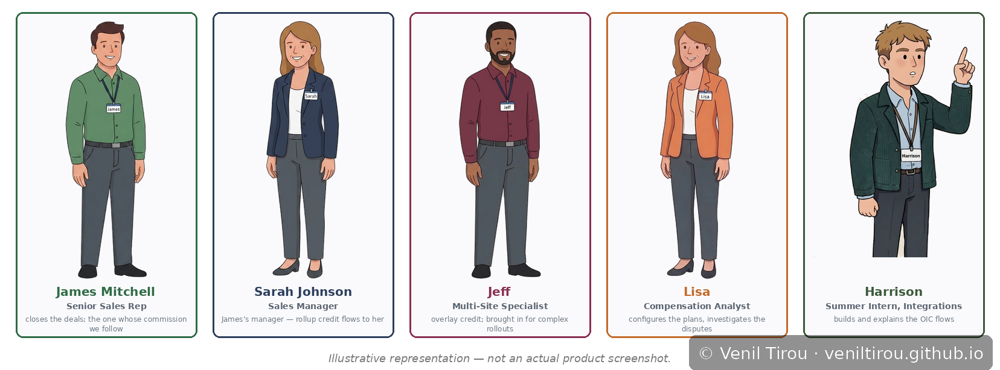
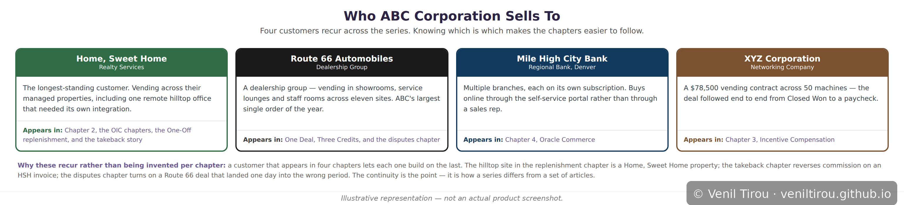
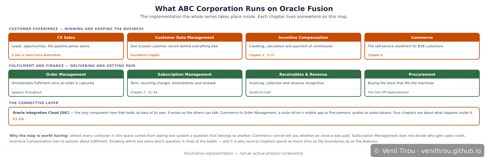

Foundation
The World of ABC Corporation
Every chapter in this series takes place inside one company. Before going anywhere near a compensation plan or an integration flow, it helps to know who that company is, who works there, who it sells to, and what it runs on. This page is the map — read it first, or come back to it whenever a name in another chapter feels unfamiliar.
The premise: ABC Corporation is a vending
solutions provider based in Denver. It places and services vending
machines — drinks, snacks, the equipment itself — for other businesses,
typically on multi-year subscriptions rather than outright sales. A hotel
group, a dealership, a bank: each becomes a recurring customer with
machines across multiple sites, service coverage, and a monthly bill.
Some years ago ABC implemented Oracle Fusion to run that business. Everything in this series is a story about people at ABC using that implementation to do their jobs — and occasionally about what happens when the software does something they did not expect.
Some years ago ABC implemented Oracle Fusion to run that business. Everything in this series is a story about people at ABC using that implementation to do their jobs — and occasionally about what happens when the software does something they did not expect.
A note on what is real and what is not: ABC Corporation
and its customers are fictional. The Oracle products, the mechanics, the
terminology and the behaviour are not — those are drawn from Oracle's
documentation, and each chapter says explicitly where it is following
documented behaviour and where it is illustrating. The company exists so
the products have somewhere to happen.
The People

📱 On mobile? Pinch to zoom to read the details clearly.
Who you will keep meeting. James Mitchell
is the senior sales rep whose deals and commission the series follows
most closely. Sarah Johnson manages him — which matters
more than it sounds, because credit for his deals rolls up to her.
Jeff is the multi-site specialist brought in on complex
rollouts, and is credited as an overlay rather than through the
management line. Lisa is the compensation analyst who
configures the plans and investigates the disputes.
Harrison is the summer intern on the integrations side,
and is usually the one explaining what OIC is actually doing.
Others appear as the stories need them — Mike on a split credit, Priya and Daniel in a dispute queue — but these five carry most of it.
Others appear as the stories need them — Mike on a split credit, Priya and Daniel in a dispute queue — but these five carry most of it.
The Customers

📱 On mobile? Pinch to zoom to read the details clearly.
Four customers recur across the series, and knowing
which is which makes the chapters considerably easier to follow.
Home, Sweet Home is the longest-standing — a realty
services company whose properties include the remote hilltop office that
needed its own integration. Route 66 Automobiles is a
dealership group and the source of ABC's largest single order.
Mile High City Bank buys online through the self-service
portal rather than through a sales rep. XYZ Corporation
is the $78,500 deal followed from Closed Won to a paycheck.
They recur deliberately. The hilltop site in the replenishment chapter is an HSH property; the takeback chapter reverses commission on an HSH invoice; the disputes chapter turns on a Route 66 deal that landed one day into the wrong period. That continuity is what makes this a series rather than a collection of articles.
They recur deliberately. The hilltop site in the replenishment chapter is an HSH property; the takeback chapter reverses commission on an HSH invoice; the disputes chapter turns on a Route 66 deal that landed one day into the wrong period. That continuity is what makes this a series rather than a collection of articles.
The Implementation

📱 On mobile? Pinch to zoom to read the details clearly.
What ABC actually runs, and where each chapter sits on
it. The customer-facing side is CX Sales,
Customer Data Management, Incentive
Compensation and Commerce. The fulfilment and
finance side is Order Management, Subscription
Management, Receivables and Revenue and
Procurement. Between them sits Oracle
Integration Cloud, which holds no data of its own and exists
purely so the rest can talk.
The reason this map is worth having: most confusion in this space comes from asking one system a question that belongs to another. Commerce cannot tell you whether an invoice was paid. Subscription Management does not decide who gets sales credit. Incentive Compensation has no opinion about fulfilment. Several chapters spend as much time on those boundaries as on the features themselves.
The reason this map is worth having: most confusion in this space comes from asking one system a question that belongs to another. Commerce cannot tell you whether an invoice was paid. Subscription Management does not decide who gets sales credit. Incentive Compensation has no opinion about fulfilment. Several chapters spend as much time on those boundaries as on the features themselves.
How to Read the Series
Foundation pages like this one set context and do not
follow a single deal. Chapters 1 to 4 each introduce a
module by following one story through it end to end — start here if you
are new to a product. The Advanced sections go deeper into
a module already introduced, so S1–S4 assume Chapter 2 and
I1–I3 assume Chapter 3. Integrations
(G1–G4) are about what happens between the systems rather
than inside any one of them. Reference pages are maps to
consult while working rather than stories to read.
There is no required order. But if you are starting cold, Chapter 1 gives the widest view of how a deal travels from first contact to recurring revenue, and most other chapters are a magnified piece of it.
There is no required order. But if you are starting cold, Chapter 1 gives the widest view of how a deal travels from first contact to recurring revenue, and most other chapters are a magnified piece of it.